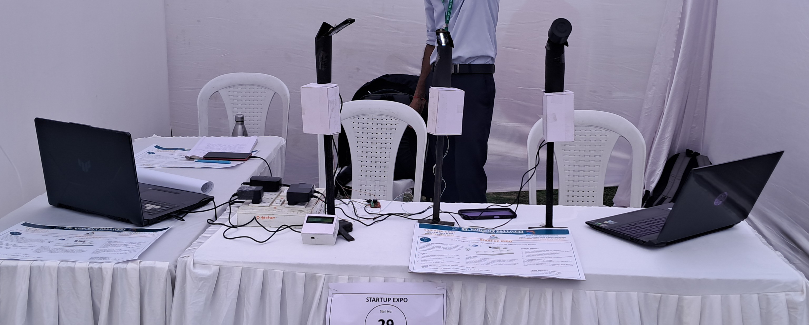

Introduction
Street lighting is a vital component of urban infrastructure, but conventional streetlights often suffer from inefficient energy usage and high maintenance costs. To address these challenges, we developed a Smart Street Light Monitoring System using ESP32 microcontrollers, ESP-NOW communication, and web-based monitoring. This prototype demonstrates an efficient and low-cost IoT solution for real-time streetlight monitoring and paves the way for future smart city implementations.
Project Overview
Our system consists of multiple ESP32-based streetlight nodes (pole ESPs) and a central master ESP32. The pole ESPs monitor streetlight status and communicate wirelessly with the master ESP using ESP-NOW. The master ESP serves as a web-based control unit, displaying real-time data on an LCD and hosting a local web server for remote monitoring.

How It Works
- Streetlight Nodes (Pole ESP32s):
- Each streetlight is equipped with an ESP32 that monitors its operational status (ON/OFF).
- The pole ESP32 waits for a request from the master ESP and sends back the status when requested.
- The communication between nodes is low-power, fast, and independent of Wi-Fi, using ESP-NOW.
- Master ESP32:
- Periodically requests data from all pole ESPs and receives their status.
- Displays real-time data on an LCD screen attached to it.
- Hosts a web server where users can monitor the streetlight data from any connected device.
- Future Expansion
- The current prototype uses ESP-NOW, which works well for short-range communication.
- In future implementations, LoRa modules can be used for long-range communication, making the system scalable for large cities.
- The master ESP can be connected to the cloud via GSM or Wi-Fi, allowing remote access and centralized control.
Achievements & Recognitions
- ✅ Wireless & Low Power:
- ✅ Real-Time Monitoring:
- ✅ Scalable:
- ✅ Easy Maintenance:
Uses ESP-NOW for efficient data transfer without relying on Wi-Fi.
Displays streetlight status on an LCD and a web dashboard.
Future versions can integrate LoRa and cloud storage for city-wide deployment.
Quick detection of faulty streetlights via the monitoring system.
Achievements & Recognitions
Awarded at the College Startup Expo (Engineers Day) – Recognized for its potential impact in smart city infrastructure.

Conclusion
The Smart Street Light Monitoring System is a cost-effective, scalable, and intelligent solution for modern urban infrastructure. By using ESP32, ESP-NOW, and web-based monitoring, this system enables real-time tracking and control of streetlights, reducing energy consumption and maintenance efforts. Future upgrades with LoRa and cloud integration will enhance its usability for large-scale smart city applications.